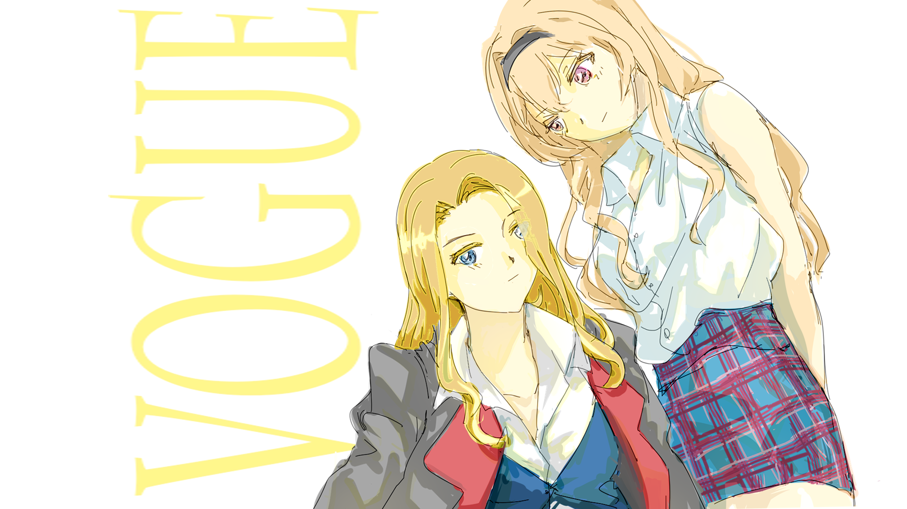

RevueStarlight Fan-fic Collections
by Artin 
"Anglo-French half-sisters, fierce and radiant. Claudine’s go-to: ‘I knew that already.’ Judy Knightley’s mantra: ‘I won’t take no for an answer.’ Two styles, one unstoppable duo lighting up the fashion world."